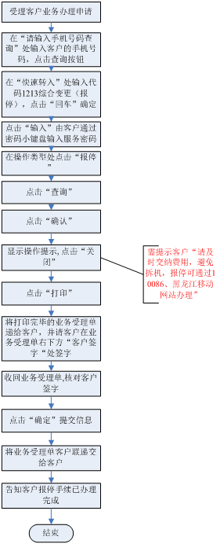
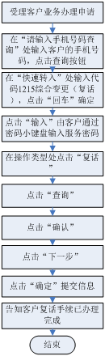
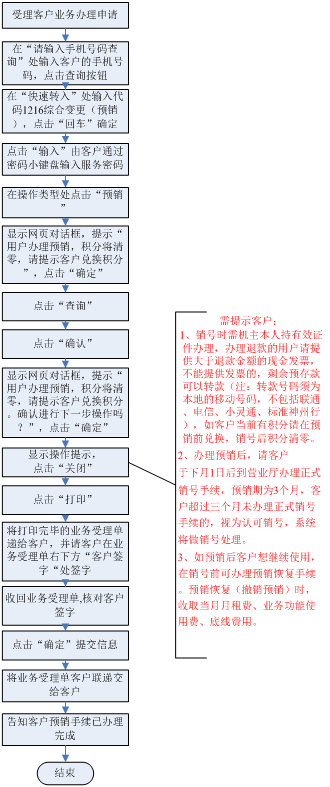
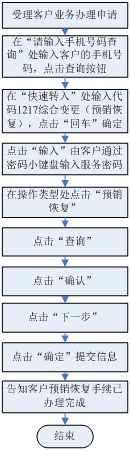
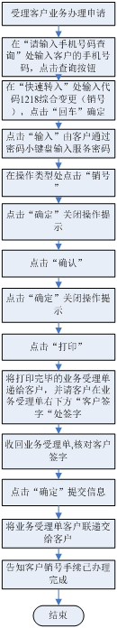

综合变更（报停)
一、业务介绍
报停是指客户主动申请停机但保留号码使用权的一种业务。机主由于某种原因暂时要求停止使用手机时，需要办理报停业务。
二、注意事项：
1、在报停整月均要收取停机保号费5元，报停及复话的当月的月使用费/底线费及通信费等正常收取，不收取停机保号费；月租日计的，报停费从报停日的次日至复话前日按日收取。
2、客户凭服务密码可以通过10086客服、移动公司网站办理报停业务。
3、报停期间智能网VPMN包月费正常收取。
4、办理业务前需结清当月应缴纳的各项费用，并根据预计报停的期限缴纳足够的报停费用。报停期间如产生欠费超过60天，移动公司有权回收号码，终止协议。
三、相关业务规范
需机主本人持有效证件，单位客户需持单位介绍信凭密码办理。
四、操作流程图

五、操作界面说明 (点击查看详细内容)综合变更（复话)
一、业务介绍
复话是指客户在报停、挂失后申请恢复使用移动电话的业务。
二、注意事项：
1、复话当月月使用费、月租费正常收取。
2、客户凭服务密码可以通过10086客服热线办理。
三、相关业务规范
客户凭服务密码办理
四、操作流程图

五、操作界面说明 (点击查看详细内容)综合变更（预销)
一、业务介绍
客户在正式办理销号前需要办理预销手续，目的是为了保证客户在销号前，相关费用能够进帐。
二、注意事项：
1、预销当月的月租费、业务功能使用费、底线费用等正常收取。
2、办理预销时如客户有欠费，需交清欠费（包括当月发生费用），正式销号时，多退少补。
3、如客户当前有积分，须在预销前兑换，销号后积分将清零。
4、如客户当前营销案未到期而无法办理预销业务，需在到期后办理，或先取消营销案（通过营销案取消界面进行操作。营销案未到期前取消，按违约处理：按礼品价格收取现金，剩余预存款按30%收取违约金），再办理预销。
5、客户销号时，须提供大于等于退预存款金额的现金发票以办理退款手续，不能提供发票的，剩余预存款可以转款（注：转款号码须为本地的移动号码，不包括联通、电信、小灵通、标准神州行）
6、办理预销后，请客户于下月1日后到营业厅办理正式销号手续，预销期为3个月，客户超过三个月未办理正式销号手续的，将视为认可销号，系统自动进行销号处理。
7、预销恢复（撤销预销）时，收取当月月租费、业务功能使用费、底线费用。
8、如预销后客户想继续使用，在销号前可办理预销恢复手续。
三、相关业务规范
办理预销业务时，要求客户本人持有效证件原件办理，留存机主有效证件复印件（或单位介绍信原件），3个月后客户仍未主动办理销号，按客户自动销号处理。
四、操作流程图

五、操作界面说明 (点击查看详细内容)综合变更（预销恢复)
一、业务介绍：
即完成办理预销后重新恢复手机号码使用的业务功能。
二、注意事项：
办理预销恢复前，应该提醒客户，预销恢复时将收取当月月租费、业务功能使用费、底线费用。
三、相关业务规范
客户凭服务密码办理
四、操作流程

五、操作界面说明 (点击查看详细内容)综合变更（销号)
一、业务介绍
销号是指客户主动申请终止移动通信服务的业务。
二、注意事项：
1、办理销号前，应提醒客户，销号业务受理成功后此号码积分清零、无法查询详单、无法再恢复使用。
2、如有剩余预存款有退款需求时：需提供大于等于退预存款金额的现金预存款发票。提供不了发票的，对剩余预存款进行转款处理 。如有欠费移动公司将继续追缴。
三、相关业务规范
需机主本人持有效证件，单位客户需持单位介绍信，持预销业务受理单、发票、凭密码办理。
四、操作流程图

五、操作界面说明 (点击查看详细内容)